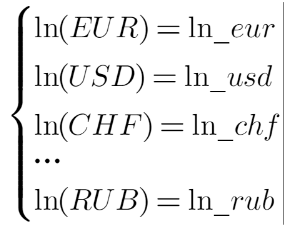
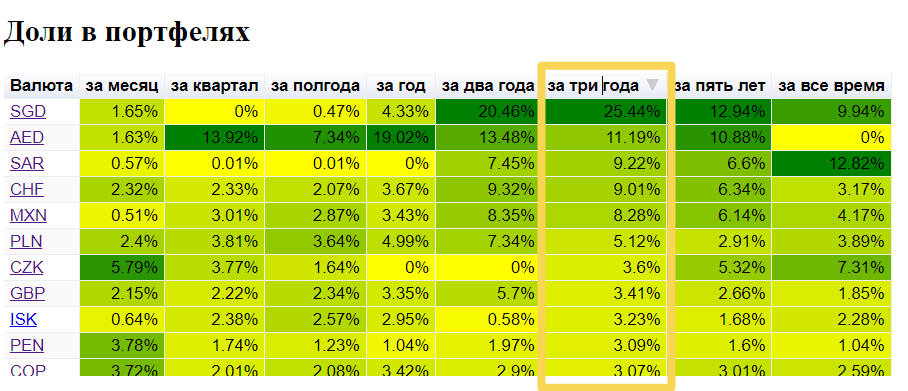

Проект "Абсолютные валютные курсы" - это онлайн-ресурс, предназначенный для анализа и отслеживания абсолютных валютных курсов. Сайт предлагает широкий спектр функций для анализа и сравнения абсолютных валютных курсов, включая отображение графиков, таблиц и рейтингов.
Сайт предназначен для инвесторов, трейдеров, аналитиков и любых лиц, которые интересуются валютными курсами и финансовыми рынками.
Методика получения абсолютных валютных курсов
Изначально мы имеем дело с парными валютными курсами. Но в парном валютном курсе участвуют две валюты. Парный валютный курс показывает отношение ценности одной валюты к ценности другой валюты. Эту ценность мы называем Абсолютным валютным курсом конкретной валюты.
Например валютная пара EURUSD - это отношение абсолютного курса Евро к абсолютному курсу Доллара.
Абсолютные валютные курсы можно вычислить из парных валютных курсов. Для этого нужно взять все имеющиеся парные валютные курсы и записать в виде системы уравнений. В каждом таком уравнении с одной стороны будет записано отношение в виде дроби двух абсолютных валютных курсов, а с другой стороны от знака равенства будет записано текущее значение парного валютного курса.
Затем стоит решить эту систему уравнений. Естественно точного решения мы не получим, но есть возможность получить приближенное решение минимизировав ошибку. Для этого нужно ко всем уравнениям в системе применить логарифмирование и получить систему линейных уравнений с логарифмами абсолютных валютных курсов.
Для решения системы линейных уравнений необходимо применить метод наименьших квадратов и получить значения для логарифмов абсолютных валютных курсов.

Применив функцию экспоненты к полученным значениям получим чистые абсолютные валютные курсы для каждой валюты.
Проделав описанную выше процедуру для каждого дня в имеющейся истории парных валютных курсов можно получить историю абсолютных валютных курсов на всем промежутке дат что и для парных валютных курсов. Код для расчета абсолютных валютных курсов можно посмотреть в тетради на Kaggle.
Зачем нужны абсолютные валютные курсы?
В портфельной теории Марковица описывается методика получения сбалансированного портфеля активов с целью минимизации риска и/или максимизации доходности. Но для составления валютного портфеля необходимо, чтобы все валюты были выражены в одной единице измерения. Парные валютные курсы имеют разные основания. Потому их нельзя использовать для сборки валютного портфеля.
Абсолютные валютные курсы позволяют выразить ценность каждой валюты через одно синтетическое основание, вычисленное из всех имеющихся парных валютных курсов.
Это дает возможность составить сбалансированный валютный портфель, используя методику Марковица, так как теперь все валюты выражены через одно основание - ABS. Для этой синтетической валюты есть изображение. Вот оно.
На конец мая 2024 года один доллар равен 22.32 ABS, один евро равен 24.21 ABS, а один рубль равен 0.25 ABS.
О справедливости оценки валют абсолютным курсом
Теперь когда говорят, что рубль или евро укрепились или ослабли, то не обязательно нужно рассматривать их парные курсы в отношении с долларом или другой какой-то валютой. Можно говорить об изменении их абсолютных курсов. Измеряя изменение стоимости валюты парным валютным курсом остается ошибка вносимая второй валютой. Измеряя изменение ценности валюты абсолютным курсом получаем более справедливую оценку т.к. эта стоимость соотносится не с одной какой-то валютой, а со всеми валютами в целом.
Парные валютные курсы
На странице "Парные валютные курсы" отображаются все имеющиеся парные валютные курсы. Там можно видеть интерактивный график текущей валютной пары, который предоставляет возможность масштабирования.
Пользователи могут перейти к страницам других валютных пар, используя ссылки. Для каждой валютной пары есть ссылки на страницы с абсолютными валютными курсами, составляющими пару валют.
Абсолютные валютные курсы
На странице "Абсолютные валютные курсы" показывается интерактивный график абсолютного валютного курса для текущей валюты. График позволяет делать масштабирование. По ссылкам можно переходить к страницам других валют и просматривать их графики абсолютных валютных курсов. Под графиками выводятся ссылки на страницы с парными валютными курсами, где участвует текущая валюта.
Кроме того приводится таблица с тремя статистиками (абсолютными доходностями, волатильностями и коэффициентом Шарпа) по валюте в разрезе разных временных диапазонов.
Рейтинг абсолютной доходности
На странице с рейтингами абсолютной доходности можно найти таблицу, выражающую среднюю годовую доходность абсолютных валютных курсов для каждой валюты, вычисленную на разных временных промежутках от месяца до всего временного промежутка имеющихся данных почти в 10 лет. Таблицу можно сортировать, нажимая на заголовок столбца. Производя такие действия, можно увидеть, что самой доходной валютой в мире является Швейцарский франк. Его абсолютный валютный курс растет в среднем на 4,8% в год.
Рейтинг абсолютной волатильности
На странице с рейтингами абсолютной волатильности доступна также таблица. В ней показаны волатильности абсолютного валютного курса для каждой валюты рассчитанные на основе данных за разные временные промежутки от месяца до полного имеющегося диапазона почти в 10 лет и нормированные к году. Таблицу можно сортировать по значениям нажимая на заголовки столбцов. Изучив таблицу можно увидеть, что валюта с самой низкой волатильностью абсолютного валютного курса на всем диапазоне исторических данных - это Сингапурский доллар. Его среднегодовая волатильность составляет всего 2,7%.
Рейтинг валют по коэффициенту Шарпа
На странице рейтинга валют по коэффициенту Шарпа доступна страница. В ней показаны коэффициенты Шарпа абсолютных валютных курсов для каждой валюты рассчитанные на основе данных за разные временные промежутки от месяца до полного имеющегося диапазона почти в 10 лет и нормированные к году. Таблицу можно сортировать по значениям нажимая на заголовки столбцов. Изучив таблицу можно увидеть, что самая выгодная для вложений валюта - это Сингапурский доллар. Он имеет самый высокий коэффициент Шарпа на всем временном промежутке более чем 1,3.
Лучшие валютные портфели по коэффициенту Шарпа
На странице лучших валютных портфелей можно найти таблицу, где показаны доли для каждой валюты в оптимальном валютном портфеле. Портфели оптимизированы (максимизирован коэффициент Шарпа для всего портфеля) для разных временных диапазонов от месяца до полного имеющегося почти в 10 лет. Доли в портфеле можно сортировать нажимая на заголовки полей таблицы.

Под таблицей с долями можно видеть небольшую таблицу со статистиками оптимизированных портфелей за каждый временной промежуток.
В самом низу страницы отображаются графики истории лучших портфелей выраженные в процентах.
Изучив таблицы можно увидеть, что наилучший портфель рассчитанный на промежутке в три года включает в себя 21 валюту. Большую долю в портфеле составляют Сингапурский доллар (25%), Дирхам ОАЭ (11%), Саудовский риял (9%), Швейцарский франк (9%). Коэффициент Шарпа в годовом выражении составил 3,63. Годовая доходность составляет 5,67%. Годовая волатильность портфеля 1,52%.
При этом коэффициент Шарпа для оптимального портфеля выше чем лучший в рейтинге валют, волатильность портфеля лучше чем в рейтинге волатильности валют.
Заключение
В проекте из более чем 80-ти парных валютных курсов рассчитываются абсолютные валютные курсы для 45 мировых валют торгуемых на рынке FOREX. Вся историческая информация по валютным парам получается с помощью API сервиса Alpha Vantage. Весь расчет в автоматическом режиме ежедневно происходит в тетради на Kaggle. Все данные сохраняются в электронной многостраничной книге Google Speadsheet. Затем эти данные используются для отображения пользователю в виде таблиц и графиков на сайте и в блоге.